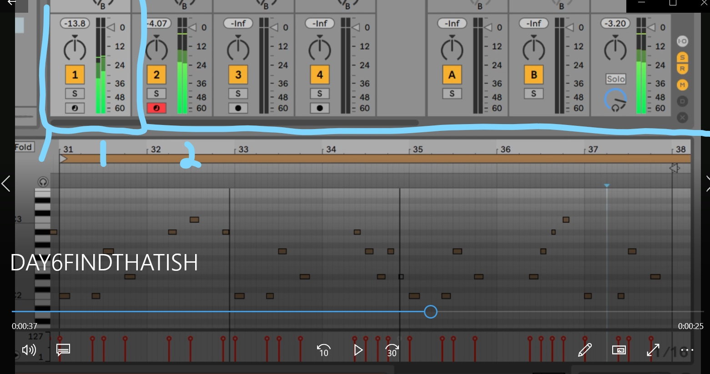

breathing and thinking.
WB1, WB2, WB3, WB4:
close your eyes and listen to this song on your good headphones if possible. remember point zero, the place of no judgement and no preference. be aware of what your hearing, seeing, feeling, and doing with your body as you listen. think about
cookie making class, its online, how can the teacher taste it? why is this class better?
whats in the box?
spend a few minutes getting to know the other person. each share 1 interesting moment with the group.
masks for question, question: 1-4 minutes
how about it? repeate breakout again, new partners. for example something sad or tragic and complicated (how do you skip the details?!), a funny story, one thing they learned. triple trophy if you get all three.
[breakout groups] have you made soup (audio into traktor)
Ali: what have you learned about learning, how do you move from i don't know to knowing even just a little bit?
WHAT IS AUDIO?

What is MIDI? filenaming? day 6 find that ish. [choose a bpm that sounds good, instrument hint?]
traktor tutorial
tutorial purgatory
you know what to do:
what do you want to learn . how is your progress?
you're next~!
the game! 
next up?!
studio timer (20 minutes per round!) find that
elements. literal vs abstract
seasons
In the long run, where are you, and how are you doing?
mountain story
choose your midi instrument.